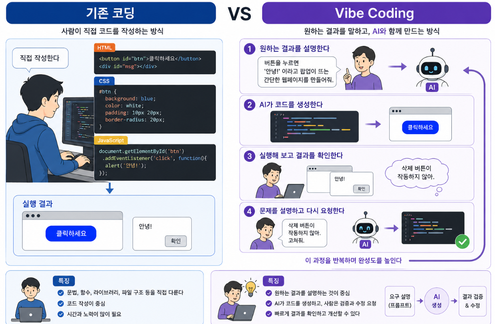

Vibe Coding 소개
Table of Contents
1. 기본 개념
- 예전 코딩은 사람이 직접 코드를 한 줄씩 많이 작성하는 방식에 가까웠다.
- Vibe Coding은 사람이 “무엇을 만들고 싶은지”를 자연어로 설명하고, AI가 코드를 만들어 주면 사람이 실행하고 고치는 방식이다.
- AI Studio는 이런 AI 기능을 실험하고, 프롬프트를 테스트하고, 실제 앱 개발 코드로 연결할 수 있게 해주는 웹 기반 도구다. Google AI Studio는 모델을 빠르게 시험하고 프롬프트를 실험한 뒤, 준비되면 “Get code”로 Gemini API 코드를 가져올 수 있다. (Google AI for Developers)
2. Vibe Coding의 뜻
- Vibe Coding은 개발자가 자연어로 만들고 싶은 프로그램이나 기능을 설명하면, AI가 코드를 생성하고, 사람은 그 결과를 실행·검토·수정하는 개발 방식
- 이 표현은 2025년 Andrej Karpathy가 사용하면서 널리 알려졌고, 일반적으로 LLM에게 작업을 설명해 소스코드를 자동 생성하는 방식으로 설명
2.1. 기존 코딩과의 차이

2.2. Vibe Coding의 기본 흐름
3. Vibe Coding의 장점과 한계
3.1. 장점
- 빠르게 만들 수 있다.
- 코딩 초보자도 간단한 앱을 실험할 수 있다.
- 아이디어를 바로 시제품으로 바꿔 볼 수 있다.
- 반복 수정이 쉽다.
- 개발자는 단순 반복 코드보다 구조 설계, 검토, 문제 해결에 더 집중할 수 있다.
3.2. 단점
- AI가 만든 코드가 항상 맞지는 않다.
- 보안 문제가 숨어 있을 수 있다.
- 코드 구조가 지저분해질 수 있다.
- 사용자가 코드를 전혀 이해하지 못하면, 오류가 났을 때 원인을 찾기 어렵다.
- 따라서 Vibe Coding은 “AI가 다 알아서 해주는 마법”이 아니라, 사람이 목표를 정하고 결과를 검사하는 협업 방식으로 봐야 한다.